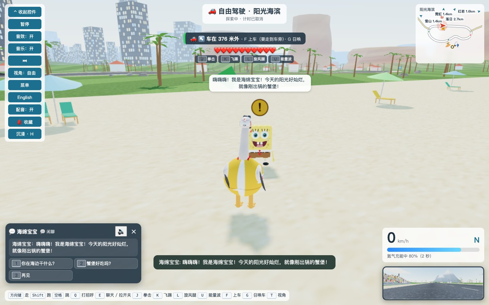

赛场里的即时反应
出发、加速、最后一圈、获胜或碰撞，车手会说出对应的台词。海绵宝宝、小黄人和派大星还会回应道具攻击、护盾拦截和蘑菇加速。
打个招呼，听朋友回应。被龟壳击中，听车手喊疼。这次，赛道和旷野里的角色都有了自己的声音，中文和英文都能听。

出发、加速、最后一圈、获胜或碰撞，车手会说出对应的台词。海绵宝宝、小黄人和派大星还会回应道具攻击、护盾拦截和蘑菇加速。
问候、闲聊、请求跳舞、跟随或和平相处，都有语音回应。玩家的问候先说完，朋友再接话。
海绵宝宝的秘方、史蒂夫的钻石剑、猫头鹰的谜语都有声音。对话框保留字幕，并提供语音重播按钮。
这些是游戏中的实际录音。先听中文，再听英文；试听另一段时，前一段会自动暂停。
被道具击中，依然乐观
哎呀！你打到我了！不过我还能继续！
Ow! You hit me! But I can keep going!
慢半拍的受击反应
啊！你打到我了！我刚才还以为只是被轻轻推了一下。
Ow! You hit me! I thought someone just gave me a little nudge.
为了香蕉，道具出击
道具出击！为了香蕉！
Item away! For the bananas!
机灵、带童真的问候
喵，你好。今天由我来带路。
Meow. Hello. I'll lead the way today.
剧情里会出声的谜语
第一题：这个游戏里，海边乐园的建造工坊是谁的世界？
Question one: whose world is the building workshop in the seaside park?
旷野朋友的日常闲聊
我在砍树做工作台，要不要一起去挖矿？
I'm chopping wood for a crafting table. Want to go mining?
自由驾驶时按 F 下车，靠近朋友，按 Q 打招呼或 E 聊天。剧情对话可点击 🔊 重播。
自由驾驶中，车手还会偶尔说一句符合自己性格的话。
菜单中打开「语言与配音」，选择中文或 English，调节配音音量及字幕。顶部按钮也能切换语言与配音开关。
道具赛中按 X 使用道具；三位角色的同场景反应会换句，播报之间留有间隔。
部分实时任务进度由设备语音朗读，声音可能因设备而不同。首次播放需要点击、触摸或按键。